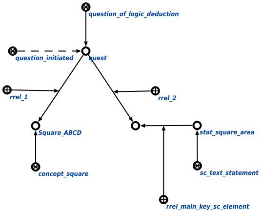

Задачей агента выполнения логического вывода является выполнение логического вывода. Данный агент инициируется при условии появления в памяти вопросной конструкции, соответствующей запросу выполнения логического вывода. Первым аргументом запроса является объект, к которому применяется утверждение, вторым - сам узел применяемого утверждения. Пример вопросной конструкции представлен ниже:
